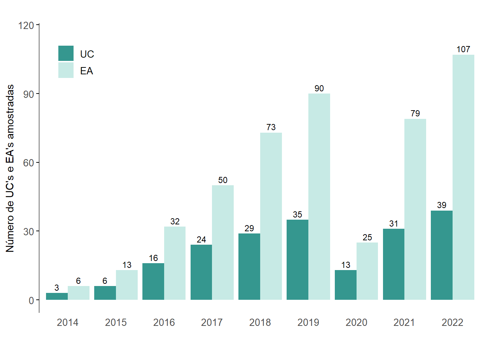
4 Borboletas frugívoras
Isabela Freitas Oliveira1-2, Onildo João Marini Filho1 & Arlindo Gomes Filho3
Centro Nacional de Pesquisa e Conservação da Biodiversidade do Cerrado e Restauração Ecológica - CBC
Instituto Chico Mendes de Conservação da Biodiversidade – ICMBio
Parque Nacional de Brasília
Via Epia, BR-450, Km 8,5
70635-800 Brasília, DFCoordenação de Monitoramento da Biodiversidade - COMOB
Instituto Chico Mendes de Conservação da Biodiversidade – ICMBio
Complexo Administrativo EQSW 103/104 s/n
70670-350 Brasília, DFCentro Nacional de Pesquisa e Conservação de Aves Silvestres – CEMAVE
Instituto Chico Mendes de Conservação da Biodiversidade – ICMBio
BR-230 Km 10
Floresta Nacional da Restinga de Cabedelo
58108-012 Cabedelo, PB
Em alguns grupos de insetos, a variação na riqueza, abundância e composição de espécies das comunidades ao longo do tempo vem sendo utilizada como indicador de alteração ambiental ([1], [2], [3]). No caso de borboletas, além desses parâmetros, a frequência relativa de ocorrência em nível de tribo também tem sido usada em estudos pontuais e programas de monitoramento (referencia?). Esse indicador está relacionado tanto a alterações na vegetação ([4], [5]) e eventos extremos climáticos, quanto a mudanças menos perceptíveis, como a redução na qualidade do ar (especialmente devido à presença de agrotóxicos) ([6], [7]) e variações graduais do clima (temperatura e umidade) ([8]).
A abordagem que vem sendo utilizada no Programa Monitora considera a existência de um gradiente na associação entre as tribos de borboletas frugívoras e a estrutura das formações florestais, variando das florestas mais alteradas e/ou abertas até florestas mais adensadas e fechadas. O protocolo adotado pelo grupo de especialistas em borboletas considera que as tribos registradas estão relacionadas aos seguintes tipos de ambiente:
florestas fechadas/conservadas: Brassolini, Haeterini e Morphini. Em situações de perturbação da floresta a abundância relativa dessas tribos diminui consistentemente;
florestas abertas/alteradas (com abertura significativa no dossel): Ageroniini, Callicorini e Biblidini. As espécies dessas tribos são favorecidas por alterações na estrutura da floresta e suas abundâncias aumentam consistentemente com perturbações locais.
As tribos Preponini, Melanitini, Anaeini, Epicaliini, Epiphilini, Coeini e Satyrini não apresentam associação clara com ambientes florestais ou não demonstram tendência definida. A abundância dessas tribos pode aumentar ou diminuir em resposta a perturbações da floresta, como abertura de clareiras ou eventuais alterações no dossel.
4.1 Implementação
No período de 2014 a 2022 o protocolo amostral de borboletas frugívoras foi aplicado de forma integral ou parcial em 50 UCs federais, totalizando 134 estações amostrais (EAs) e 536 unidades amostrais (UAs - transecções com quatro armadilhas atrativas do tipo Van Someren-Rydon) em operação. A maior parte das amostragens (39 UCs, - 78%) foi realizada no bioma Amazônico, seis UCs (12%) foram amostradas na Mata Atlântica e cinco UCs (10%) no Cerrado. O PARNA da Chapada dos Veadeiros, no bioma Cerrado, teve suas amostragens interrompidas, pois constatou-se que as EA haviam sido implantadas em ambientes savânicos. Com a realocação dessas EAs em ambiente florestal (mata de galeria) as amostragens deverão ser retomadas e a UC será reintegrada ao Programa. No PARNA de Brasília as amostragens ainda estão sendo realizadas em ambiente savânico, mas estas deverão ser consideradas parte do componente Campestre e Savânico do Programa. Os dados brutos validados do alvo global Borboletas Frugívoras - Componente Florestal totalizam atualmente 82.349 registros.
Em 2022 foram amostradas apenas duas UCs (PARNA de Pacaás Novos e REBIO do Uatumã), mas os dados não foram enviados à Coordenação Geral de Pesquisa e Monitoramento da Biodiversidade - COMOB a tempo de comporem este relatório. O PARNA de Brasília realizou a campanha de 2022 no Open Data Kit - ODK, com os dados inseridos no i-naturalist e em planilha google drive. Portanto, esses dados não foram incorporados neste relatório, sendo necessária sua futura conversão e configuração para o formato padronizado da planilha .xls atualmente utilizada no Programa.
Em 11 de março de 2020 a Organização Mundial de Saúde decretou estado de pandemia pela COVID-19 (doença respiratória causada pelo vírus SARS-CoV-2), situação que se estendeu até o início de 2023. As rigorosas restrições de locomoção e interação social impostas nos dois primeiros anos de disseminação da doença (2020-2021) impactaram negativamente as atividades de campo do Programa Monitora, com interrupção ou redução no esforço amostral do alvo borboletas frugívoras (Figura 4.1 e Figura 4.2).
Das 50 UCs federais com coleta de dados de borboletas frugívoras, 33 (66%) já estão consolidadas, com pelo menos três unidades amostrais (transecções lineares) em operação. Três UCs (x%) retomaram as amostragens em 2022 (PARNA do Superagui, ESEC Marac e ESEC da Terra do Meio), seis UCs (x% - PARNA da Bocaina, PARNA da Bodoquena, PARNA da Serra dos Órgãos, PARNA do Juruena, REBIO Guaribas e RESEXChico Mendes) não estão em operação (UCs com mais de dois anos consecutivos sem amostragem) e apenas uma UC (x% - RESEX Renascer) interrompeu a amostragem em 2022.
Em 2022, a amostragem de borboletas frugívoras foi realizada em 40 das 50 UCs integrantes do Programa Monitora, nos três biomas florestais (Tabela x). O ano de 2022 teve 21 UCs a mais do que 2021, com um aumento de 26% na quantidade de Estações Amostrais (EAs) implementadas (Figura 4.1). Todas as oito novas UCs que aderiram ao Monitora e iniciaram a amostragem de borboletas são amazônicas e apoiadas pelo Programa ARPA. As ? UCs apoiadas pelo ARPA apresentam os melhores índices de implementação dos protocolos de borboletas, sendo que ?? delas (??%) já estão consolidadas, com pelo menos três UAs sendo amostradas.
O esforço amostral vem aumentando quase linearmente a uma taxa de 15-20% ao ano, desde o início da implementação do Programa Monitora. O número de registros aumentou desproporcionalmente ao esforço em 2016, aparentemente devido a fatores climáticos. O número acumulado de registros de borboletas amostradas em nível de tribo (protocolo básico) totalizou ?? indivíduos (Figura 4.2).

4.1.1 Considerações sobre as amostragens na Mata Atlântica
Poucos indivíduos vêm sendo capturados nas UCs da Mata Atlântica. Esse padrão de baixa taxa de capturas vem sendo observado nas UCs da Serra do Mar e baixada litorânea (PARNAs da Serra dos Órgãos, da Serra da Bocaina e do Superagui). Ainda não sabemos o motivo do método não estar gerando resultados similares aos obtidos para UCs em outros ambientes. É possível que o período ideal de coleta seja o final da estação seca, devido ao padrão bimodal de ocorrência de borboletas nesses ambientes ([5]; [9]), bem como em outras regiões montanhosas da Mata Atlântica.
Nesse sentido, recomendamos que sejam exploradas outras possibilidades de desenho amostral para a Mata Atlântica, que possam ajudar a ampliar a quantidade de dados. Sugerimos implementar experimentalmente uma amostragem adicional no final da estação seca, nas UCs em que a logística permitir. Essa sugestão pode ser estendida para matas paludosas e sazonalmente alagadas. Outra questão importante a ser considerada na escolha do local de instalação das unidades amostrais é evitar a implantação das estações amostrais na face sul das montanhas nessas UCs. Pode-se também avaliar a possibilidade de se amostrar no dossel das matas paludosas e sazonalmente alagadas, uma vez que a comunidade de sub-bosque de matas muito sombreadas e alagadas frequentemente se mostra pouco diversa ([10]; [11]).
4.2 Resultados
4.2.1 Amazônia
4.2.1.1 Síntese por região climática
O objetivo dessa seção é apresentar análises integrativas mostrando padrões regionais ou geográficos, indicando alterações na biodiversidade em escala ampla. Neste período inicial do Programa Monitora estão sendo estabelecidos os padrões normais de riqueza, abundância, composição e frequência relativa para cada UC e, possivelmente, para cada região (marco zero). Os primeiros resultados que estamos apresentando são as proporções normais de abundância relativa de tribos por região climática (Figura 4.4 a Figura 4.8).
Considerando que ainda não temos dados populacionais para borboletas, uma vez que poucas UCs iniciaram a aplicação do protocolo avançado, ainda não é possível gerar tendências nesse nível. Uma das formas pretendidas para apresentação desse tipo de resultado é por meio de um índice de abundância, considerando o esforço amostral para cada população monitorada – igual ou similar ao Índice Planeta Vivo ([12]). Para isso, necessitamos de dados populacionais coletados em amostragens anuais consecutivas para cada uma das espécies em cada unidade de conservação ou estação amostral. Com esse tipo de dado, poderemos obter tendências de aumento ou diminuição de populações em EAs, UCs, ou regiões climáticas ([13]).
Mesmo não tendo ainda acesso a dados populacionais, estamos avaliando a viabilidade do uso de um índice no nível de tribos para servir de base para futuras análises no Programa Monitora. Uma proposta será apresentada adiante.
Os períodos de amostragem propostos no protocolo do Programa Monitora para borboletas frugívoras na Amazônia seguem a mesma lógica aplicada para as regiões Central e Sudeste do Brasil, onde temos alta abundância populacional e maior diversidade de espécies de borboletas frugívoras no final do período de chuvas intensas ([14]). Os períodos de amostragem para as regiões amazônicas apresentados a seguir baseiam-se na caracterização climática associada ao padrão de chuvas em toda a Amazônia (Figura 4.3, reproduzida de [15]). A partir da determinação dos regimes de chuva regionais, delimitamos alguns polígonos contemplando as UCs integrantes do Programa Monitora, possibilitando estabelecer a melhor época para amostragem (Tabela x), considerando o regime de chuvas como uma característica regional importante para as borboletas frugívoras (Figura 4.4).

Tabela x. Localização das UCs em relação às regiões climáticas da Amazônia, incluindo o período sugerido de amostragens de borboletas indicado como o final das chuvas. As UCs com * situam-se entre duas ou mais regiões climáticas (q. = quinzena). As UCs marcadas com # ainda não iniciaram a amostragem de borboletas.
4.2.1.2 Representação de UCs nas regiões climáticas amazônicas
Em sete UCs da região climática central amazônica foram realizadas amostragens de borboletas frugívoras: PARNA da Amazônia, PARNA do Jaú, REBIO do Jaru, REBIO do Uatumã, ESEC da Terra do Meio, FLONA do Jamari e RESEXTapajós-Arapiuns. Essa é a região em que o Programa está mais consolidado e possui o maior número de registros e de EAs em atividade. Por isso, será a única região climática analisada separadamente.
Apesar de termos uma boa representatividade de EAs e um número considerável de borboletas amostradas nos últimos dois anos, ainda observamos grandes variações nas proporções de tribos entre anos (Figura 4.4). Considerando as variações na proporção de indivíduos, enquanto a tribo Brassolini apresentou tendência de diminuição de 2014 a 2017, Epicaliini mostrou tendência oposta. Por outro lado, as tribos Satyrini e Coeini tiveram comportamento errático, variando amplamente entre anos nesse período. Satyrini é a tribo com maior contribuição para o total de indivíduos e uma das que sofrem maiores flutuações. As tribos Callicorini, Biblidini e Ageroniini, características de ambientes alterados, tiveram baixíssima representação no conjunto de UCs da região climática central amazônica. Considerando esse conjunto de variações nas proporções das tribos, a assinatura regional sofreu consideráveis alterações de 2014 a 2018 (Figura 4.4).

Não foram coletados dados de borboletas frugívoras em UCs da região climática noroeste amazônica. Essa região é extremamente chuvosa e que praticamente não possui um período de estiagem, dificultando a definição do melhor período de amostragem de borboletas. Mesmo assim, seria importante implementar a amostragem de borboletas em, pelo menos, três EAs da RESEXdo Baixo Juruá, valendo-se dos parâmetros estabelecidos para a região climática norte amazônica (Tabela x). A identificação de ao menos mais duas UCs nessa região para compor o Programa Monitora seria bastante benéfica para conferir maior robustez ao conjunto de dados gerados em nível regional amazônico.
As outras quatro regiões climáticas amazônicas possuem dois ou três anos a menos de amostragem do que a região Central. Desta forma, considerando o curto tempo de coleta, as análises dos dados dessas regiões ainda são pouco informativas e os resultados gerados não indicam tendências significativas a serem destacadas.
Na região climática norte amazônica três UCs estão sendo amostradas: PARNA Serra da Mocidade, ESEC de Maracá e ESEC Niquiá. As amostragens nessa região começaram em 2017, resultando em menos tempo para definição das frequências normais (Figura 4.5).

Já na região climática leste amazônica dados de borboletas frugívoras estão sendo coletados em quatro UCs: PARNA do Cabo Orange, PARNA Montanhas do Tumucumaque, REBIO do Gurupi e RESEXRenascer. A região apresentou menores variações nas proporções de tribos de 2016 a 2022. Essa é uma característica desejável para dados de monitoramento, pois menores variâncias aumentam o poder de discriminação entre amostras (Figura 4.6).

Na região climática sudoeste amazônico borboletas frugívoras vêm sendo amostradas em sete UCs: PARNA da Serra do Divisor, PARNA Serra da Cutia, PARNA Mapinguari, RESEXdo Alto Tarauacá, RESEXBarreiro das Antas, RESEXdo Cazumbá-Iracema e RESEXdo Rio Ouro Preto. A região possui um padrão de assinatura de tribos diferente das demais, com maiores proporções das tribos associadas a ambientes perturbados, especialmente Ageroniini. A grande variação na proporção de Satyrini e, em menor grau, Morphini e Brassolini, gerou assinaturas bastante diferentes em anos consecutivos na região. Isso também pode ser um artefato estatístico relacionado ao aumento do número de estações amostrais e de borboletas amostradas no período, uma vez que estas variáveis aumentaram mais de seis vezes nesse período (Figura 4.7).

Na região climática sudeste amazônica dados de borboletas frugívoras estão coletados em apenas duas UCs: PARNA do Juruena e REBIO do Tapirapé. Apesar da baixa representação, houve grande homogeneidade nos resultados das áreas amostradas, com assinaturas bastante similares. Considerando que a metade sul da ESEC da Terra do Meio encontra-se nessa região, novas EAs que vierem a ser implementadas nessa porção da UC poderão ser adicionadas a esse conjunto regional (Figura 4.8).

4.2.2 Cerrado e Mata Atlântica


4.2.3 Índice de abundância de tribos
A análise a seguir está em fase de teste conceitual, tanto do modelo estatístico quanto do significado biológico. Esse tipo de análise geralmente é feito com dados populacionais (abundância de indivíduos), estando seu cálculo e seu significado biológico já consagrados em diversos países (e.g., [16]). Assim, nessa abordagem criamos um índice de abundância aplicável em nível de tribo e geramos análises para testar a sua viabilidade para o Programa Monitora. Caso adotado, esse índice poderá servir de base para o monitoramento de flutuações de abundância, complementando a abordagem das assinaturas, que tem um enfoque qualitativo. Entendemos que o Programa Monitora necessita de abordagens mais quantitativas, que possibilitem a mensuração e definição de níveis de variação sobre os quais possam ser gerados alertas para atenção ou verificação pela gestão da UC.
4.2.3.1 Cálculo do índice
O índice de abundância tem como base o número acumulado de indivíduos de cada tribo em cada ano numa dada área. Partindo da frequência absoluta de indivíduos por tribo por ano (n), fazemos inicialmente uma correção, somando um número muito pequeno a cada frequência absoluta, de forma a evitar a presença de zeros na matriz. Desta forma é obtida a frequência absoluta corrigida (f = n + 0,00001). Em seguida, é calculada a frequência, corrigida pelo esforço amostral (fe = número de armadilhas * dias de amostragem). Considerando que essa frequência mostra grandes variações, às vezes em duas ordens de grandeza, optamos por realizar uma transformação logarítmica para normalizar os dados. Assim, o próximo passo é calcular o log10 da fe. O índice é finalmente calculado, comparando-se as variações da fe em anos consecutivos, considerando-se sempre o índice igual a 1,0 para o primeiro ano em que aquela “população” foi registrada. A Tabela x mostra o produto desse cálculo. Note que o ano base para algumas tribos difere do ano base da maioria das outras.
Tabela x. Matriz resultante do cálculo das frequências absolutas divididas pelo esforço amostral, normalizadas (Log10) e transformadas em índice “populacional” para rastrear as variações a partir do ano em que uma “população” foi detectada (i = 1,000); i = índice de abundância a partir do ano base.
4.2.4 Análises regionais
Assim como foi feito na seção anterior, utilizaremos os mesmos conjuntos de dados regionais para explorar a viabilidade do uso do índice proposto. A região climática central foi analisada separadamente por ser a única que possui dados para cinco anos consecutivos. Apesar de tanto a composição de UCs quanto o esforço amostral terem se multiplicado cinco vezes nesse período (Tabela x), ainda assim este é o melhor conjunto de dados que possuímos para gerar tais análises.
Considerando que a visualização das 13 tribos em um mesmo gráfico impede a identificação do comportamento das curvas individualmente, optamos por apresentar dois gráficos para cada região, com as tribos mais representativas de ambientes bem preservados e de ambientes mais perturbados. As variações do índice para cada uma dessas tribos para a região climática central amazônica podem ser observadas na Figura 4.12, Figura 4.17. O ano base mostra o valor inicial da “população” monitorada e é sempre igual a 1,0. As mudanças subsequentes mostram variações baseadas nessa população inicial, sendo que variações acima da linha de base indicam crescimento populacional e, abaixo, diminuição. Quase todas as tribos apresentaram o mesmo padrão de variação. Houve uma pequena diminuição em 2015 e 2016, seguida de um grande aumento em 2017 e um decréscimo posterior em 2018. É interessante observar que a tribo que apresentou menor variação no período foi Ageroniini, seguida de Morphini.
Já para as demais regiões climáticas amazônicas, o esforço amostral e a quantidade de dados obtidos até 2022 foram inferiores aos obtidos para a região central, sendo ainda insuficientes para mostrar alterações significativas. A região norte passou a gerar dados apenas a partir de 2017 e ainda possui EAs suficientes para possibilitar essa análise. As regiões leste e sudoeste já possuem um bom número de EAs e, em poucos anos, terão dados suficientes para análise. A região sudeste ainda está em processo de implementação, sendo necessária a adesão de novas UCs ao Programa para a obtenção de um conjunto de dados adequado para análise. Essa região vem apresentando os melhores retornos de captura por unidade de esforço (CPUE), com muito mais indivíduos amostrados do que as outras regiões para um mesmo nível de esforço realizado (Tabela x), exceto pela região central (Tabela x).
A abundância das tribos variou sem uma tendência predominante de 2016 a 2018 nas regiões climáticas norte, leste, sudoeste e sudeste amazônicas. Algumas tribos apresentaram picos de abundância para cima ou para baixo durante esses primeiros anos, como Callicorini, na região sudoeste, em 2017, e Biblidini, nas regiões leste e sudeste, também em 2017. Porém, a maioria das tribos encontravam-se, em 2018, próximas do valor original (1,0) (Figura x). Essas tribos apresentaram tamanhos populacionais muito pequenos em quase todas as UCs durante esse período.
De forma geral, qualquer variação na quantidade de borboletas capturadas causou grandes variações no índice de abundância. Portanto, concluímos que o uso desse índice para “populações” pequenas não é aconselhável. Cabe avaliar se, com o aumento no esforço amostral e uma suposta ampliação na quantidade de dados acumulados, com reflexos no tamanho das populações analisadas, o método nos permitirá discriminar entre variações biologicamente significativas, associadas a algum tipo de alteração ambiental, de meras pequenas oscilações naturais casuais e erráticas nessas populações.
Tabela x. Soma do número de indivíduos e esforço amostral (nº de EAs x nº de armadilhas x 12 dias de amostragem) no conjunto de sete UCs da região climática central amazônica. Esforço amostral em armadilhas x dia.
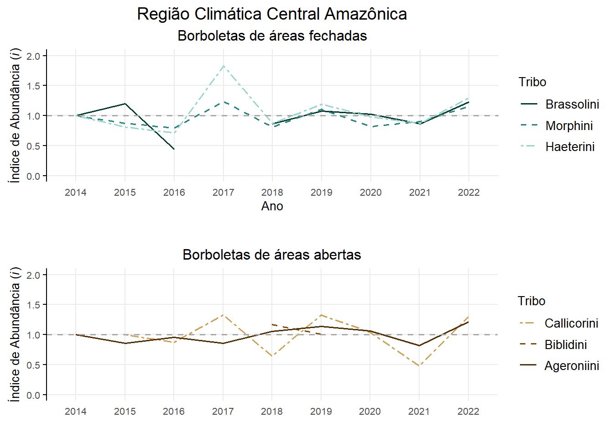
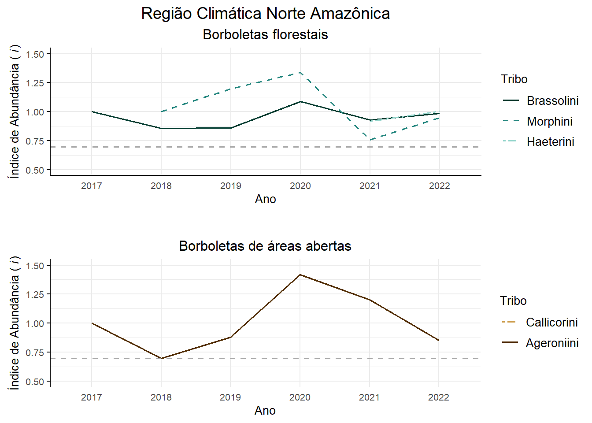
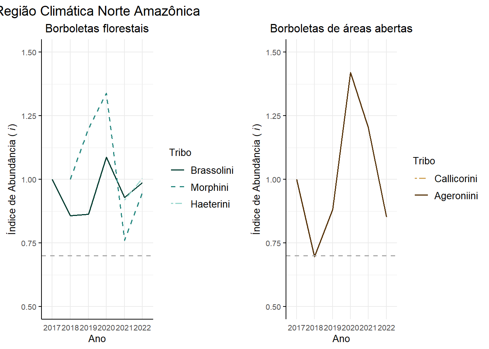
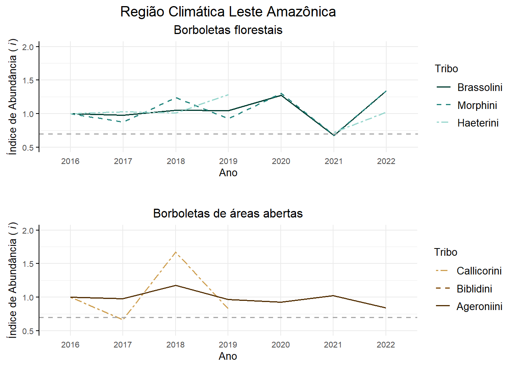
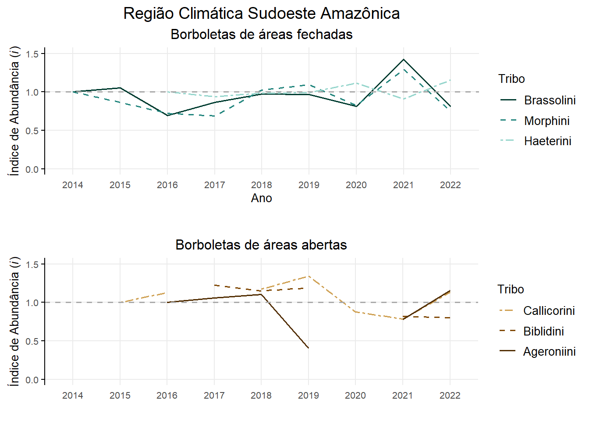
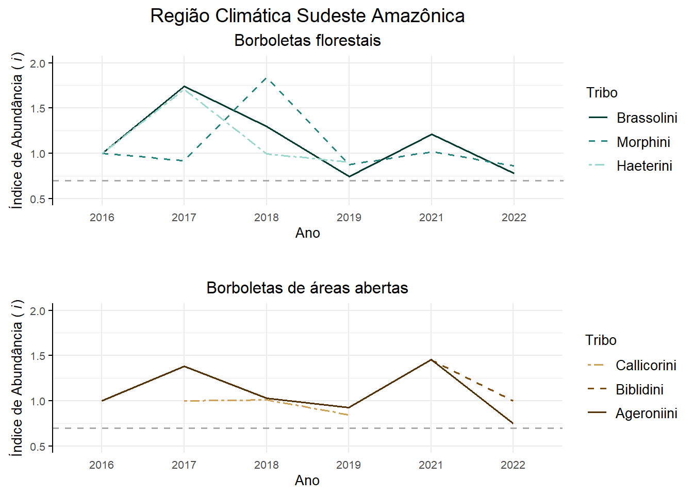
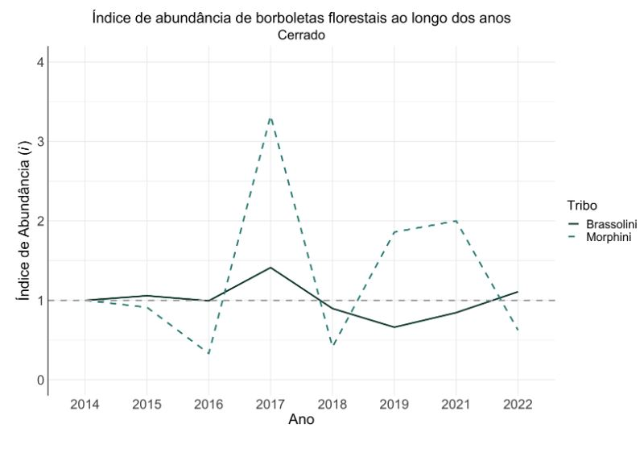
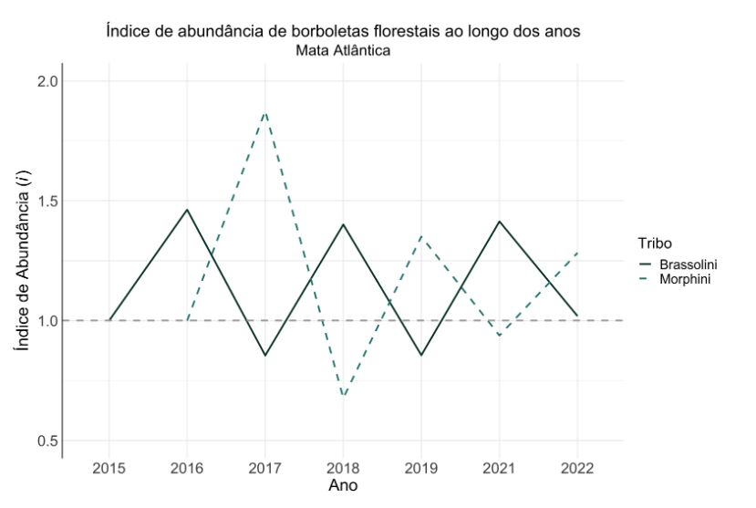
4.2.5 Destaques
4.2.5.1 Efeito da seca extrema de 2015 nas UCs da região Central Amazônica**
4.2.5.2 Efeito da queda dos tabocais na RESEX Cazumbá-Iracema e Riozinho da Liberdade e Serra do Divisor (controle)**
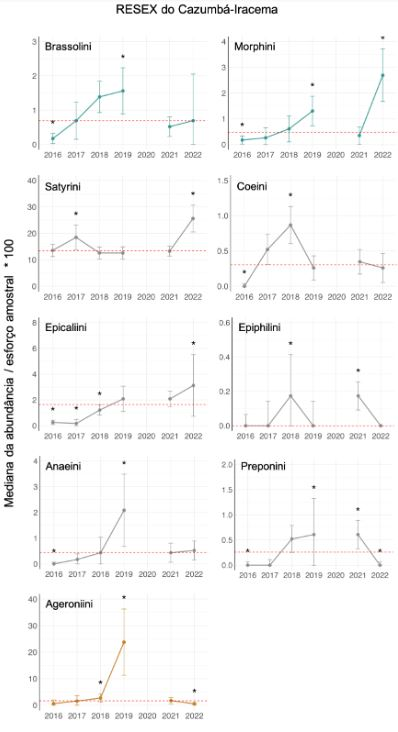
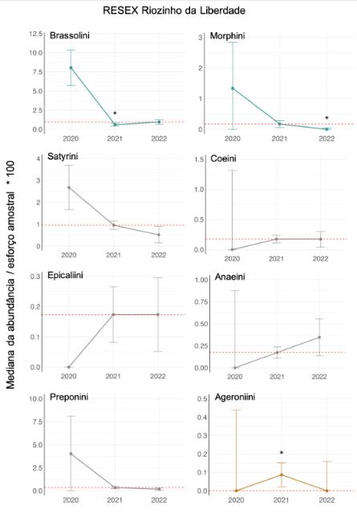
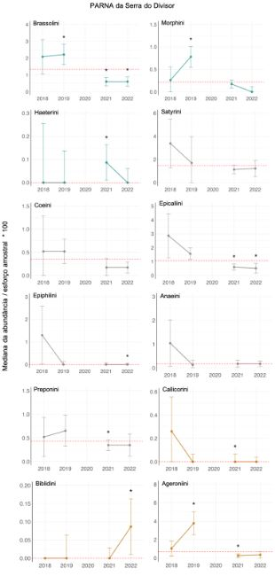
4.3 Discussão
4.4 Recomendações
Boas práticas para aprimorar o Programa
Ampliar o número de unidades de conservação com aplicação do protocolo de borboletas frugívoras (Básico e Avançado) nos biomas Mata Atlântica e Cerrado;
Consolidar a implantação do protocolo de borboletas frugívoras naquelas unidades de conservação ainda não consolidadas, de forma que as UCs contem com pelo menos três estações amostrais implantadas e em operação;
Assegurar que durante as campanhas de campo as amostragens sejam realizadas de acordo com as diretrizes estabelecidas no protocolo amostral, em especial quanto ao respeito aos períodos de coleta definidos para cada região e em relação ao esforço amostral (número de dias de amostragens em cada EA);
Assegurar que os dados coletados sejam repassados à COMOB de acordo com as orientações definidas pela Coordenação e num prazo razoável após a realização da campanha de campo.